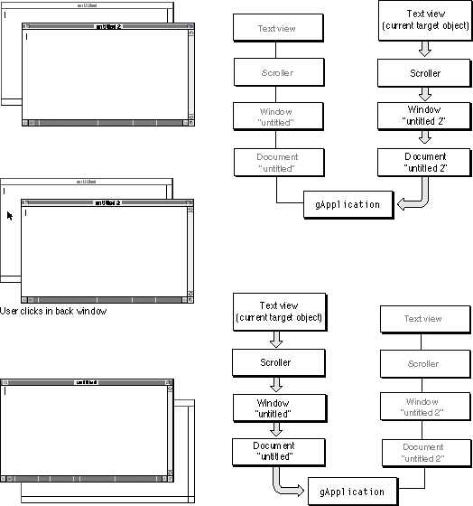

Legacy Document
Important: The information in this document is obsolete and should not be used for new development.
Important: The information in this document is obsolete and should not be used for new development.


Target Management
"Target Chain Dispatching," beginning on page 107, describes how MacApp dispatches menu commands and key events to event-handler objects in the target chain. The command or event is passed to each object in the target chain, starting with the current target object, until one of the objects handles it.The current target object can change frequently during execution of your application. Managing this process is known as target management. The most common target objects are views, documents, and the application object. As part of MacApp's target management, these objects are given the opportunity to
The next sections describe MacApp's target management.
- get ready to receive events
- validate input
- perform cleanup before relinquishing target status
Automatic Target Changes
MacApp performs many target changes automatically:
Figure 5-6 shows a target change due to window activation. The document window "untitled 2" is in front. Its text view is the current target object and receives events such as data entry keystrokes. If an event isn't handled by the text view, it is passed on to its superview, a scroller. If the event isn't handled by the scroller, it is passed on to the other objects in the target chain, a window, a document, and finally the application object.
- When the user clicks in a view, MacApp checks the
fWantsToBeTargetfield to see if the view wants to become the target. IffWantsToBeTargethas the valueTRUE, or if theWantsToBeTargetmethod has been overridden to always return the valueTRUE, MacApp makes the view the current target object.Note that a view that has targetable subviews should not want to be a target itself. It will receive events anyway, whenever one of its subviews is targeted.
- When a window is deactivated, MacApp makes the application itself the target object until another window is activated.
- When the current target is a text entry view and the user presses the Tab key, MacApp switches the target to the next view in the current window that has been properly defined. For more information on tabbing, see "Tabbing Between Views," beginning on page 243.
- When the active window changes, MacApp sets the current target object to the target view of the new active window. The target view of the window is specified in its
'View'resource but can also be specified in your code.
Figure 5-6 MacApp target chain as affected by window activation

When the user clicks the back window, "untitled", that window is activated and its target view becomes the current target object. In this case, the target is again a text view, with a hierarchy (and a target chain) similar to the previous view. Both chains end at the application object. (This behavior can vary if the user clicks draggable data in the back window, as described in "Mouse-Down Events," beginning on page 105.)
Manual Target Changes
You can modify MacApp's default behavior by specifically setting the current target object. TheTEventHandlerclass provides theBecomeTargetmethod for this purpose. To be sure an event-handler object is willing and eligible to become the target, you can call itsWantsToBeTargetmethod before calling itsBecomeTargetmethod. TheBecomeTargetmethod performs target validation and returnsTRUEif the target change succeeded. Target validation is described in the next section.Target Validation
When MacApp attempts to change the current target object, or when you attempt to change the target in your code, the current target object may not be ready to give up being the target. For example, the target might be a text entry view in a dialog box that contains invalid information.Target validation is the process of allowing the current target object to validate its data before a target change and refuse to change if the data is invalid. The
BecomeTargetmethod performs target validation by calling theResignTargetmethod of the current target object.The
ResignTargetmethod calls theWillingToResignTargetmethod of the current target object. The default version of this method returns 0, indicating that it is willing to resign. If an object is not willing to resign,ResignTargetcalls theTargetValidationFailedmethod of the target object. You can overrideTargetValidationFailedto display an alert box--for example, to tell the user why the data in a text entry field is invalid.Target Change Notification
Whenever the target changes, MacApp notifies the old and new target objects. It calls theResignedTargetmethod of the old target object and calls theBecameTargetmethod of the new target object. The default versions of these methods do nothing, but you can override them to let your objects prepare to receive events or perform cleanup before relinquishing target status.